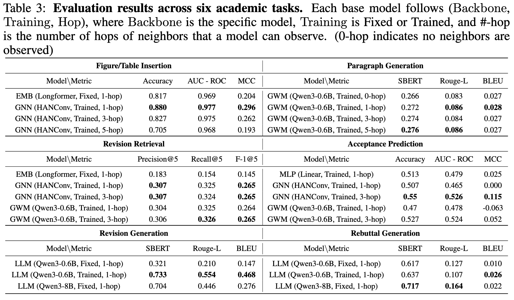
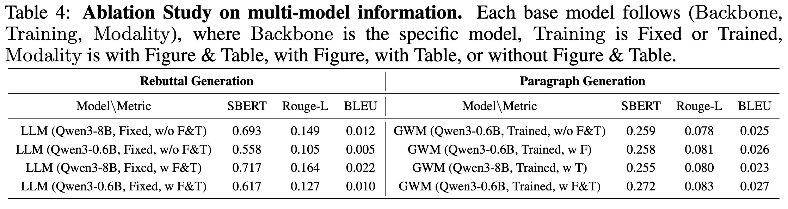

ResearchArcade is General. It supports diverse tasks by integrating multi-modal data from ArXiv and OpenReview and converting it into formats like CSV or JSON. Predictive tasks are handled by EMB-based, GNN-based, and GWM-based models, while generative tasks are managed by LLM-based models. The data quality in ResearchArcade is validated, with smaller LLMs approaching the performance of larger ones, particularly in tasks like Revision and Rebuttal Generation.
ResearchArcade Models Dynamic Evolution. It captures dynamic evolution at both intra-paper and inter-paper levels by integrating temporal data from ArXiv and OpenReview. It excels in tasks like Revision Retrieval and Revision Generation, where GNN-based and GWM-based models outperform EMB-based models, showcasing the framework's effectiveness in modeling manuscript evolution. Incorporating OpenReview rebuttal data significantly improves performance, while the Acceptance Prediction task highlights the difficulty of predicting research trends, with accuracy barely exceeding random chance.
Relational Graph Structure Delivers Consistent Gains. Graph-based models (GNN and GWM) outperform non-graph models (EMB and MLP) with performance improvements of 7.7%, 67%, and 7.2% in Figure/Table Insertion, Revision Retrieval, and Acceptance Prediction, respectively. Multi-hop aggregation further boosts performance in Acceptance Prediction, where 3-hop aggregation increases accuracy to 0.55, surpassing the MLP baseline. However, additional hops show limited or negative benefits in tasks like Figure/Table Insertion due to graph sparsity.
3.2 Ablation Study

Multi-Modal Information Is Critical. In tasks like Rebuttal Generation and Generate Missing Paragraph, including visual and tabular data improves understanding and leads to significant performance gains. For instance, revision generation scores increase from 0.693 to 0.717 for the larger model, while paragraph generation improves from 0.259 to 0.272, demonstrating the critical role of multi-modal information.